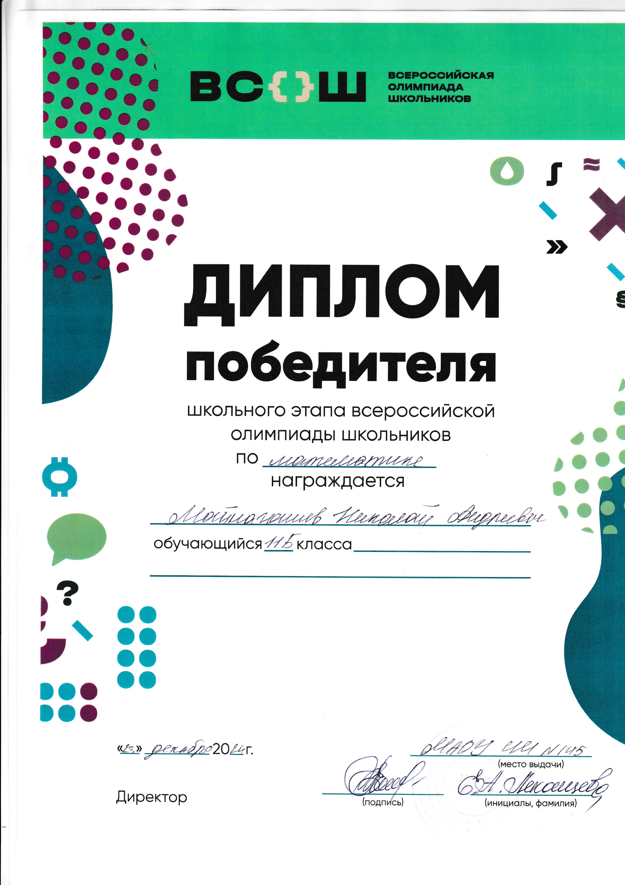
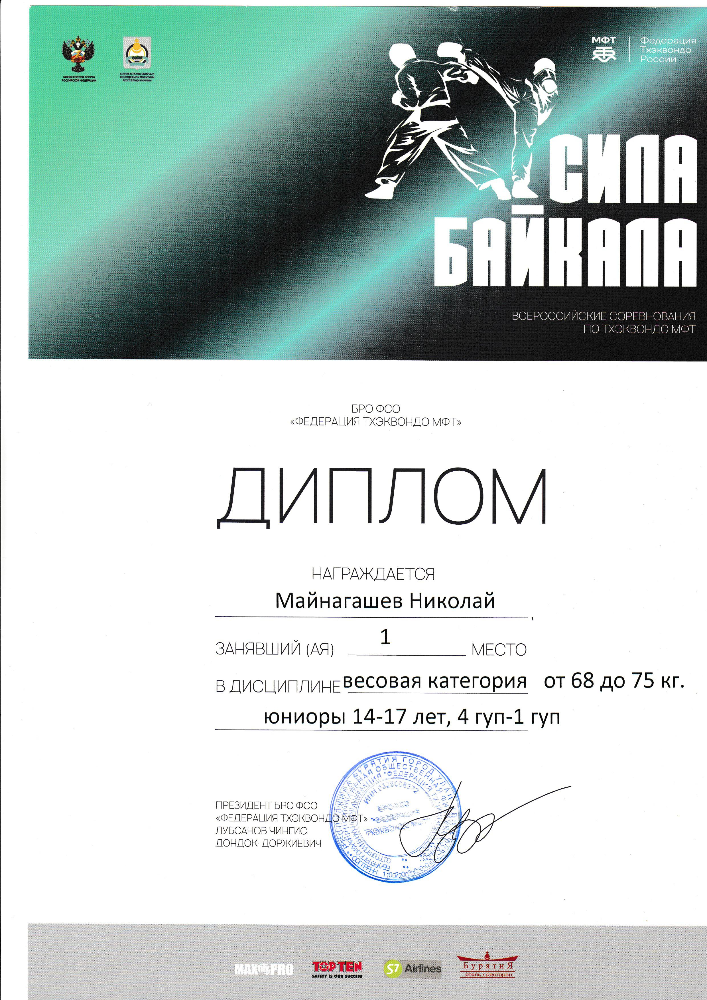
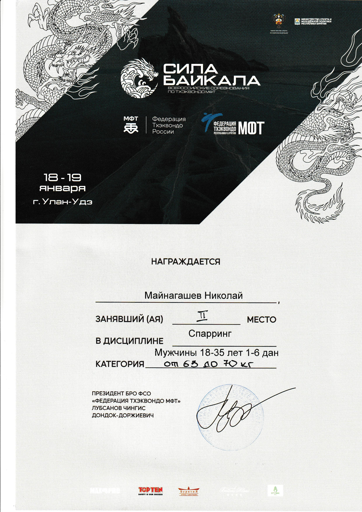

Портфолио
Какие успехи мы имеем?
- Победитель школьного этапа ВСОШ по математике
- Победитель всероссийкого соревнования по тхэквондо МФТ (юниоры 14-17 лет)
- Призёр всероссийкого соревнования по тхэквондо МФТ (мужчины 18-35 лет)



Почему на программу ТОП-ИТ должны взять именно меня?
Я полностью осознаю, что у меня нет опыта в IT в его классическом понимании. У меня нет завершенных проектов и знаний конкретных языков программирования. Но у меня есть то, что, как я считаю, не менее важно:
- Мотивация и готовность к полному погружению. Мое решение углубиться в программирование - не эксперимент, а взвешенный шаг. Я прихожу с огромным желанием учиться и намерен посвятить все свое время и силы освоению материала. Мой интерес заключается не в поиске готовых ответов, а в овладении инструментами для их самостоятельного нахождения.
- Настойчивость и целеустремлённость. Я полностью осознаю сложность пути с нуля и готов к интенсивной работе. Для меня препятствия и ошибки — это неотъемлемая часть учебного процесса, возможность для анализа и роста. Я уверен в своей способности быть упорным и доводить начатое до конца.
- "Чистый лист". У меня нет устоявшихся, но, возможно, устаревших или неоптимальных подходов к коду. Я смогу сразу воспринимать и применять на практике именно те современные методики и лучшие практики, которые заложены в curriculum вашей программы. Это позволит мне сформировать правильные и актуальные профессиональные привычки с первого дня.
Каким я вижу свое будущее в сфере IT?
Мое будущее в IT я выстраиваю в три четких этапа:
- Краткосрочная перспектива (1-2 года): После успешного окончания программы «ТОП-ИТ» я планирую устроиться на позицию Junior-разработчика. Моя главная цель на этом этапе - как можно больше учиться у старших коллег, активно участвовать в реальных проектах, нарабатывать не только технические навыки, но и понимание процессов разработки в команде. Я хочу стать не просто «кодером», а полноценным и полезным членом IT-команды.
- Среднесрочная перспектива (3-5 лет): Я вижу себя уверенным Middle-специалистом, который может самостоятельно решать сложные задачи, а также вносить весомый вклад в проект. Я планирую к этому времени углубить знания в определенной области (например, в backend- или frontend-разработке, или в data science) и стать в ней экспертом.
- Долгосрочная перспектива (5+ лет): В будущем я хочу вырасти до уровня Lead- или Senior-разработчика, чьи решения влияют на архитектуру и успех крупных продуктов. Кроме того, я мечтаю когда-нибудь использовать свои навыки для создания социально значимых проектов, которые смогут решать реальные проблемы людей.
Участие в программе «ТОП-ИТ» - это для меня не просто курсы, а фундамент, с которого начнется весь этот путь. Я горю желанием учиться, приносить пользу и доказать, что правильная мотивация и трудолюбие значат ничуть не меньше, чем предыдущий опыт.
Мои навыки
- HTML - Понимаю базовые принципы
- CSS - Понимание основ и умение применять
- Точные науки - Математический склад ума, хорошо знаю физику
- Спорт - Занимаюсь тхэквондо МФТ 12 лет, выступал на кубке сибири, а также на всероссийких соревнования
Моё видеообращение
Как со мной связаться?
Вы можете написать мне в одну из соцсетей: